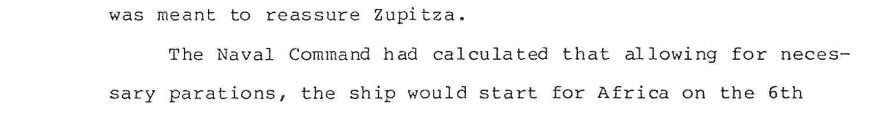

The archive
Corrections
Every change made to the raw machine reading, with the page it was made on. Each was checked against the page image before it was added; nothing here was inferred from context alone.
105 phrase corrections, 147 single-word corrections, 2 capitalisations, and 7 pages retyped by hand. Page numbers are positions in the scanned PDF; the author’s own folio numbers, written at the foot of each sheet, run three lower. Struck-through readings are the scanner’s; the reading beside it is the page’s. Where a crop settled the question, it is one click away.
German names and umlauts
The scanner rendered ö, ü and ä as &,
é, S, 8 or d, often
differently on different pages for the same name. These were the largest
single class of error, and the most consequential: the book is largely about
German officers and their ships.
| As scanned | As typed | Times | Pages |
|---|---|---|---|
| Br&cker | BröckerThe page | 1 | 225–226 |
| B&édecker | Bödecker | 1 | 105–106 |
| Bédecker | BödeckerThe page | 3 | 105–106 |
| Bddecker | Bödecker | 1 | 105–106 |
| Deuxiéme | Deuxième | 1 | 127 |
| Disseldorf | Düsseldorf | 1 | 54–55 |
| DUusseldorf | Düsseldorf | 1 | 64–65 |
| Dlisseldorf | Düsseldorf | 1 | 97 |
| Fuhlsblttel | Fuhlsbüttel | 1 | 126–127 |
| Fthhrer | FührerThe page | 1 | 76–78 |
| G8bel | Göbel | 1 | 101–102 |
| Gébel | Göbel | 1 | 101–102 |
| G&bel | Göbel | 2 | 183, 252 |
| Gdbel | Göbel | 1 | 252 |
| GdSppingen | GöppingenThe page | 1 | 27 |
| G&ring | GöringThe page | 5 | 34, 131–132, 134–135, 137–138, 204 |
| G&Sring | Göring | 3 | 131–132, 133, 134–135 |
| Géring | Göring | 2 | 131–132, 134–135 |
| G&dring | Göring | 1 | 131–132 |
| Gdéring | Göring | 1 | 133 |
| GSring | Göring | 3 | 134–135, 222–223, 249–250 |
| Hlilsen | Hülsen | 1 | 65–66 |
| Jterbog | Jüterbog | 1 | 113–114 |
| Jiiterbog | Jüterbog | 1 | 114 |
| Jiterbog | Jüterbog | 1 | 135–136 |
| J&terbog | Jüterbog | 2 | 145, 225 |
| Jitterbog | Jüterbog | 1 | 147 |
| J&terhbog | Jüterbog | 1 | 225–226 |
| JUterbog | Jüterbog | 1 | 226 |
| Kapitanleutnant | Kapitänleutnant | 1 | 97 |
| Kohlschttter | Kohlschütter | 1 | 81–82 |
| Kohlschiitter | Kohlschütter | 1 | 81–82 |
| Kdlle | Kölle | 1 | 125–126 |
| K&lle | Kölle | 2 | 125–126, 127 |
| Kélle | Kölle | 8 | 125–126, 126, 127, 129–130, 130 |
| K&élle | Kölle | 2 | 125–126, 127 |
| K&Slle | Kölle | 1 | 125–126 |
| KSlle | Kölle | 3 | 129–130, 158 |
| Kdélle | Kölle | 1 | 130 |
| Kénigsberg | Königsberg | 2 | 4–5, 70–71 |
| K&nigsberg | Königsberg | 1 | 4–5 |
| kKénigsberg | Königsberg | 1 | 4–5 |
| Maller | Müller | 1 | 230–231 |
| Mtlrwick | Mürwick | 1 | 99–100 |
| Schlitte | Schütte | 4 | 28, 28–29, 62 |
| Schltte | Schütte | 1 | 28–29 |
| Schiitte | Schütte | 2 | 28–29 |
| Sp&hkorb | SpähkorbThe page | 1 | 60–61 |
Letter confusions and single words
The classic failures of machine reading on a worn typewriter ribbon — n for h, l for 1, i for l, v for y, c for e, rn for m, q for g — plus a few digits read into the middle of words.
| As scanned | As typed | Times | Pages |
|---|---|---|---|
| RBockhnolt | Bockholt | 1 | 198 |
| Flmo's | Elmo's | 1 | 191 |
| Furopean | European | 1 | 192–193 |
| Erom | From | 1 | 12 |
| Gerinman | German | 1 | 34–35 |
| Gerinan | German | 1 | 172–173 |
| Jersusalem | Jerusalem | 1 | 225 |
| KSlle's | Kölle's | 1 | 130 |
| Kélle's | Kölle's | 2 | 130, 158 |
| Loof | Looff | 3 | 6, 138–139, 216–217 |
| Ludendorféf | Ludendorff | 1 | 64–65 |
| Museun | Museum | 1 | 168 |
| Naogles | Naples | 1 | 238–239 |
| Nauven | Nauen | 1 | 205 |
| Salaan | Salaam | 1 | 40 |
| Secrappen | Seerappen | 1 | 70–71 |
| Sieygfried's | Siegfried's | 1 | 255–256 |
| Simayv | Simav | 1 | 212 |
| Soimnerfeldt | Sommerfeldt | 1 | 78–79 |
| MThere | There | 1 | 192 |
| fLurkish | Turkish | 1 | 189–190 |
| YUntortunately | Unfortunately | 1 | 12–13 |
| Wilhelinstrasse | Wilhelmstrasse | 1 | 39–40 |
| Tinston | Winston | 1 | 175–176 |
| Wurttenderg | Wurttemberg | 1 | 24–25 |
| Yainbol | Yambol | 1 | 231 |
| zZeppelins | Zeppelins | 1 | 176–177 |
| absout | about | 1 | 162–163 |
| accompanv | accompany | 1 | 14 |
| airshinp's | airship's | 1 | 195 |
| amimunition | ammunition | 1 | 179–180 |
| hattlefield | battlefield | 1 | 13–14 |
| battleshios | battleships | 1 | 97–98 |
| hread | bread | 1 | 193–194 |
| Suilt | built | 1 | 23–24 |
| dispostions | dispositions | 1 | 18 |
| eneny's | enemy's | 1 | 22–23 |
| fErom | from | 1 | 190–191 |
| nad | had | 6 | 186, 189, 225–226, 226–227, 227, 235–236 |
| ifis | his | 1 | 228–229 |
| inguiry | inquiry | 3 | 118–119, 118, 166 |
| Jaurels | laurels | 1 | 73–74 |
| loval | loyal | 1 | 9–10 |
| ocurred | occured | 1 | 119–120 |
| overnaul | overhaul | 1 | 238 |
| pernaps | perhaps | 1 | 221–222 |
| postion | position | 1 | 18 |
| wroposed | proposed | 1 | 7–8 |
| teleqraphed | telegraphed | 1 | 239–240 |
| tne | the | 7 | 23–24, 71–73, 182–183, 190–191, 231–232, 234–235, 242 |
| thein | them | 1 | 261–264 |
| untistinguisned | undistinguished | 1 | 13–14 |
| wasS | was | 1 | 110 |
| wnich | which | 1 | 20–21 |
Passages
Longer spans where the page was faint enough that several words ran together into nonsense. In each case the reading was taken from the image rather than repaired word by word.
| Page | As scanned | As typed |
|---|---|---|
| 6 | Loof was drive past | Looff was driven past |
| 8 | He report2d the arrival | He reported the arrival |
| 8 | April 30, 1863. 'Zeppelin evidently | April 30, 1863. Zeppelin evidently |
| 8–9 | President's desk. -He rounded out | President's desk. He rounded out |
| 8–9 | moccasin clad feed of Reed | moccasin clad feet of Reed |
| 11–12 | mentioned it.in his journal | mentioned it in his journal |
| 14 | than mitivexre necessity | than military necessityThe page |
| 14–15 | eems to have condaregated a Ovposite our extreme left Les larger force | Opposite our extreme left Lee seems to have congregated a larger force |
| 16 | indeed the seuxed iE his aeronautical | indeed the source of his aeronautical |
| 17–18 | the trinv "not altogether pleasant" | the trip "not altogether pleasant" |
| 18–19 | he s2id, ne had taken | he said, he had taken |
| 18–19 | At Edward's Perry in Marvland | At Edward's Ferry in Maryland |
| 19–20 | 1863 on the stean | 1863 on the steam |
| 19–20 | "Who is Wno" | "Who is Who" |
| 24 | 7here is a third variant | There is a third variant |
| 25–26 | Wothing was Known about | Nothing was known about |
| 27 | "DZ 5" | "LZ 5" |
| 35–36 | plot against.the infant | plot against the infant |
| 39 | at & 72,000,000 | at £72,000,000 |
| 40–41 | Duala sufferedd the same fate | Duala suffered the same fate |
| 41 | officiais of the Colonial Office | officials of the Colonial Office |
| 48–49 | "T, 30" | "L 30" |
| 49–50 | payload of 22,000 yim ton: Vises ee te te ee - me Pacis ay OF %eG TAR Aer a pounds would tevyoirs & SALE os 1,765,586 displacanent | payload of 22,000 pounds would require a ship of 1,765,500 displacementThe page |
| 52 | heavier-than- air machines | heavier-than-air machines |
| 70 | "Lz 120" | "LZ 120" |
| 73 | the 3lst | the 31st |
| 75–76 | 40.6 m.p-h., | 40.6 m.p.h., |
| 79–81 | September llth | September 11th |
| 88–90 | "Tt, 57" | "L 57" |
| 91 | "T, 57" | "L 57" |
| 98–99 | one of aman feeling | one of a man feeling |
| 101–102 | - aman like the Dr. Faust | - a man like the Dr. Faust |
| 105–106 | "TI, 23" | "L 23" |
| 113–114 | "LL 57" | "L 57" |
| 120–121 | the way -Bockholt had handled it | the way Bockholt had handled it |
| 123 | "rT, 59" | "L 59" |
| 124 | Waldemar Kdlle. "Kélle. | Waldemar Kölle. "Kölle. |
| 124–125 | in the freezing pErErnTER | in the freezing temperaturesThe page |
| 134–135 | K&nigin Augustastrasse | Königin AugustastrasseThe page |
| 139–140 | startled Berlina little | startled Berlin a little |
| 141 | Army Warrant - Officer Emil Grussendorf | Army Warrant Officer Emil Grussendorf |
| 144 | a spare sletiakéel BeleGtiin and | a spare elevator helmsman andThe page |
| 147–148 | the llth | the 11th |
| 148 | "T, 13" | "L 13" |
| 148–149 | "Tl, 59" | "L 59" |
| 158–159 | A spy does more ee information | A spy does more than steal informationThe page |
| 159–160 | 2lst Nassau | 21st Nassau |
| 160–161 | Bail was set at & 200 | Bail was set at £200 |
| 166 | one of the secret code books, | one of the secret code books.The page |
| 168–169 | Der Feind h&rt mit! | Der Feind hört mit! |
| 170 | "Bavesdropper Ewing" | "Eavesdropper Ewing" |
| 177–178 | "TL 57" | "L 57" |
| 181 | "T, 59" | "L 59" |
| 181 | streets leading fron | streets leading from |
| 181–182 | left behind to.be mopped uo later | left behind to be mopped up later |
| 181–182 | "IL 59" | "L 59" |
| 183 | the report on the trinv | the report on the trip |
| 183 | Afrika zu unseren Flissen | Afrika zu unseren Füssen |
| 185–186 | the Bulqarian army | the Bulgarian army |
| 186 | "Tt, 59" | "L 59" |
| 187 | who had heen waiting | who had been waiting |
| 188 | control car and.the rear engine car | control car and the rear engine car |
| 191 | at a low aaeienae | at a low altitudeThe page |
| 191 | had heen omitted | had been omitted |
| 193–194 | zeppelin crewS was | zeppelin crews was |
| 194 | "IT 59" | "L 59" |
| 194 | "Tr, 59" | "L 59" |
| 199 | "I, 59" | "L 59" |
| 200–201 | a steady 44 m.po.h., nour after patient hour. Tt | a steady 44 m.p.h., hour after patient hour. It |
| 204 | G&8ring called the Naval Command | Göring called the Naval Command |
| 204 | evening of the 20to, | evening of the 20th, |
| 215 | seemed seriously a11. | seemed seriously ill. |
| 222–223 | the Emperor on the 29th., the | the Emperor on the 29th, the |
| 224 | December lst | December 1st |
| 225 | December llth | December 11th |
| 225–226 | had beécn awarded | had been awarded |
| 228–229 | until Te ot Weca'y 1 he reached his home station | until he reached his home station |
| 228–229 | boo oMancoalgdorf did not learn | already left. Mangelsdorf did not learnThe page |
| 228–229 | the 2lst | the 21st |
| 230 | before he deéng any thing further | before he did anything furtherThe page |
| 230–231 | the engine corey and Heinrichs Poldt | the engine crew and Heinrich Boldt |
| 230–231 | "ry, 59" | "L 59" |
| 232–233 | 1916, giving fit of whak ba had lesrned while Living in this | 1916, giving it the benefit of what he had learned while living in thisThe page |
| 234 | the people of Naoles nam euarLéudily to | the people of Naples ran curiously toThe page |
| 234–235 | Tne vietits Of Uarles were given &@ great sublice funeral | The victims of Naples were given a great public funeral |
| 234–235 | leaving 29 aaa. and fifty injured | leaving 29 dead and fifty injuredThe page |
| 239–240 | "rl, 59" | "L 59" |
| 242 | "EL 59" | "L 59" |
| 248 | abandon the small secions of | abandon the small sections of |
| 257–258 | "I 59" | "L 59" |
| 265 | "ZL 14" | "L 14" |
| 265–266 | "R 10i" | "R 101" |
Pages retyped by hand
Pages 150 to 156 are carbon copies, faint enough that the machine dropped whole lines. Targeted correction was no longer safe, so these were read off the images and typed out in full.
| Page | Words retyped | Has a footnote |
|---|---|---|
| 150 | 226 | yes |
| 151 | 248 | — |
| 152 | 257 | — |
| 153 | 262 | yes |
| 154 | 225 | yes |
| 155 | 241 | yes |
| 156 | 159 | — |
The one word that was chosen rather than read
On scan page 230 the typed word doing is struck through by hand in “…before he doing anything further”, with a correction pencilled above it too faint to read. “did” was set, as the only reading the sentence admits. This is the single place in the book where a word was supplied.